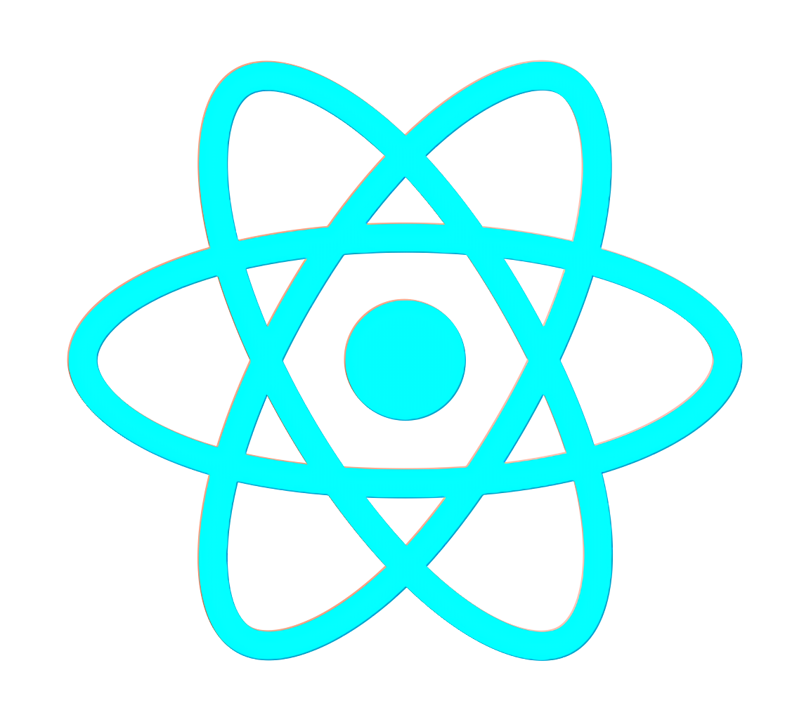
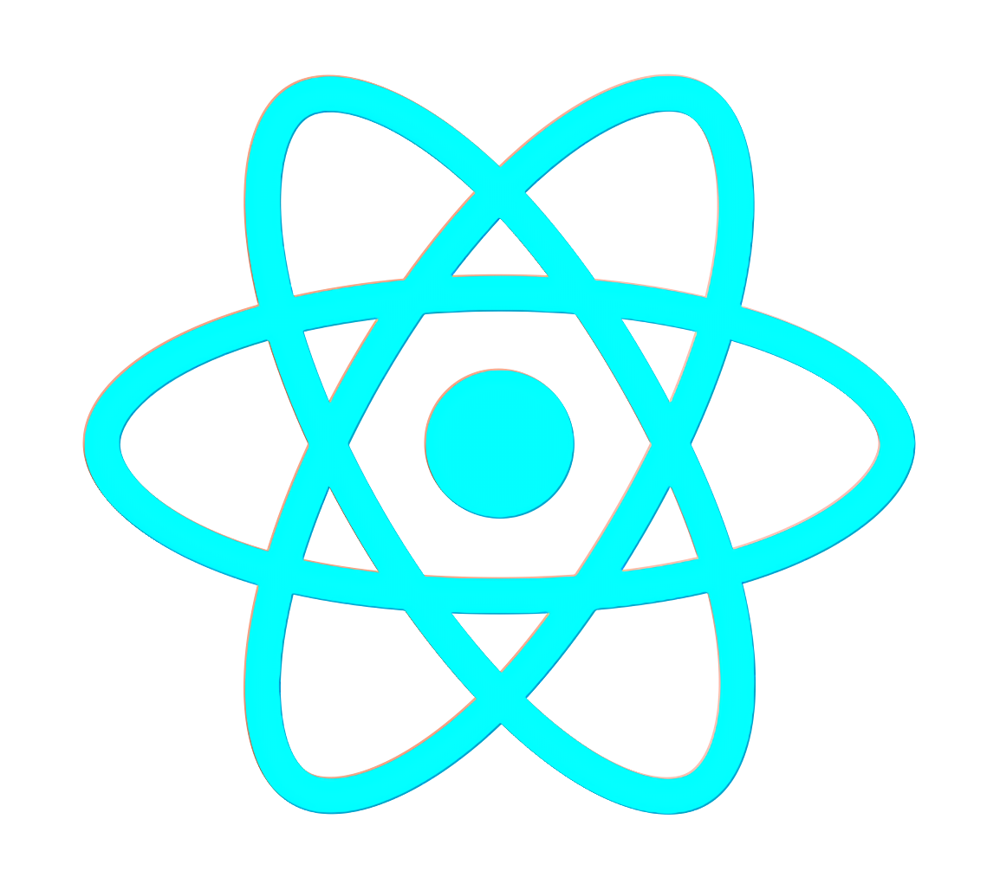

Hey! I’m Zaid Aldasht
I’m a tech enthusiast driven by innovation and real-world problem solving. Here, you can explore my projects, skills, and the impact I strive to create.
Experiences
Software Engineer
Jordan Design and Development Bureau (JODDB)
02/2024–10/2024
- Trained a YOLO-based model with a custom dataset for landmine detection.
- Implemented sensor fusion and depth camera integration to improve detection accuracy.
- Developed robot navigation and visualized mapping results using RVIZ.
- Built a LAN-based control system for remote monitoring and operation.
- Presented the MMDR project at SOFEX 202, showcasing autonomous landmine detection capabilities.


FABLAB TECHNICAL ASSISTANT
Orange Jordan
07/2024 – 10/2024
- Worked with students in the Orange Summer Challenge to build an underwater drone with live video streaming, Ethernet control, and danger detection using QGroundControl.
- Trained a YOLO-based model to detect dangerous fish (e.g., lionfish).
- Built a sumo robot and assisted students in developing their own projects.

SOFTWARE ENGINEER & CO-FOUNDER
Basic Bionics
06/2023–10/2023
- Enhanced the movement and navigation of an autonomous indoor delivery robot.
- Integrated Arabic voice interaction via Amazon Alexa for command-based robot control.
- Represented the company by presenting products at events and delivering workshops at universities.

My Approach
How I think, build, and solve.
Detail-Driven
I believe great engineering lives in the details. From precise logic to clean design, I polish every element until it performs and feels exactly as intended.
Innovation-Focused
Every project is a chance to create something that didn’t exist before. I look for smarter ways to solve problems — blending creativity, technology, and real-world impact.
Relentlessly Curious
I question assumptions, test ideas, and learn fast. Curiosity drives my work — whether it’s tuning a PID loop, refining an algorithm, or experimenting with a new framework.
Tech Stack


 



projects

minesweeper robot
An intelligent landmine detection robot designed to identify and map buried mines using camera vision and metal detection sensors. I worked in the software and AI development, implementing algorithms for autonomous navigation, object detection, and real-time mapping. The project represented Jordan in the Minesweeper Robot Competition held in Egypt, It later won Third Place in the Jordan Design and Development Bureau’s (JODDB) Creative Excellence Initiative. As part of the award, we developed an advanced second version funded by JODDB, which was showcased at SOFEX 2024, integrating improved AI perception and control systems for enhanced performance in real-world environments.
underwater drone
An underwater drone developed as part of the Orange Summer Challenge, where participants built technology-driven startup ideas. Our project aimed to tackle marine safety and ecosystem balance by integrating AI-based dangerous object detection, specifically identifying lionfish species. The drone is powered by a Raspberry Pi and Pixhawk controller, featuring brushless motors, LED lighting, and a live video feed system. it enables real-time underwater monitoring, making it suitable for environmental research, oceanography, and future commercial applications in marine exploration.
Contact Me
I’m always open to discussing new projects, creative ideas, or opportunities to make technology more impactful. Let’s connect!
zaiddasht22@gmail.com
+962799547968
Amman, Jordan